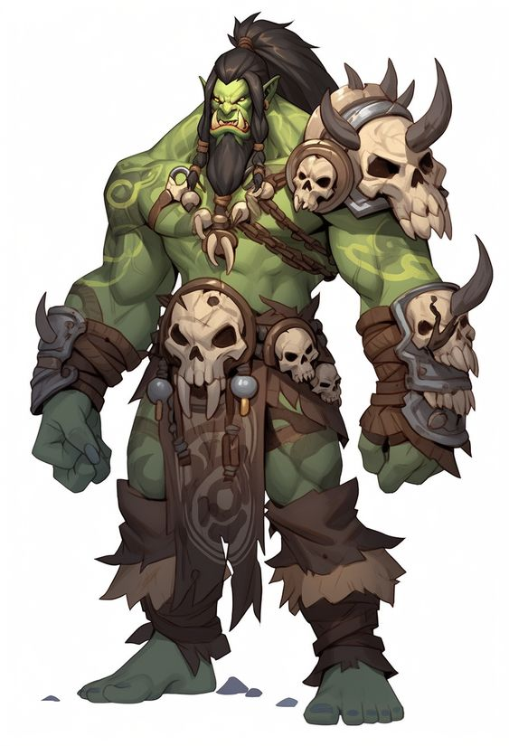

Гоблины — небольшие зеленокожие существа, известные своей проворностью и хитростью. Относятся к одному и тому-же биологическому виду, что и орки. Имеют большие уши и заострённый нос. Волосы бывают редко, но не являются чем-то необычным. Ноги и руки короткие.
Рост: от 110 до 160 см
Продолжительность жизни: достигают зрелости в 18, живут в среднем до 122 лет
Цвет кожи: зелёный, оттенки варьируются от бледно-бирюзового до жёлто-зелёного
Глаза: чаще всего жёлтые, с тёмным круглым зрачком. Иногда встречаются и прочие цвета.
Размер: средний.
Вес: от 50 кг
Скорость: 35
| Название | Описание |
|---|---|
Увеличение характеристик |
Ловкость +1, Харизма +2 |
Воодушевление |
Вне боя, вы можете спеть песню, станцевать, рассказать мотивирующую речь, рассказать пару анекдотов или любым другим образом выступить перед союзниками, что займёт несколько минут. Сделав это, вы дадите Вдохновение себе и 1 выбранному союзнику, который видел ваше выступление. Это умение нельзя использовать снова, пока вы не завершите Короткий или Продолжительный отдых. |
Гоблинская хитрость |
Во время боя, в свой ход, вы можете Реакцией совершить 1 дополнительное Бонусное действие. Это умение нельзя использовать снова, пока вы не завершите Короткий или Продолжительный отдых. Также, за раунд вы можете совершить на 1 реакцию больше. |
Действие "Уклонение" можно использовать как бонусное действие, вместо основного. Это умение нельзя использовать снова, пока вы не завершите Короткий или Продолжительный отдых. Также, вы можете использовать действие "Отход" как Бонусное действие, вместо Основного. Также, использовав умение Воодушевление, вы даёте Вдохновение не 1 выбранному союзнику, а выбираете до 2 союзников, и помимо вдхновения даёте им 10+Ур вОЗ. |
